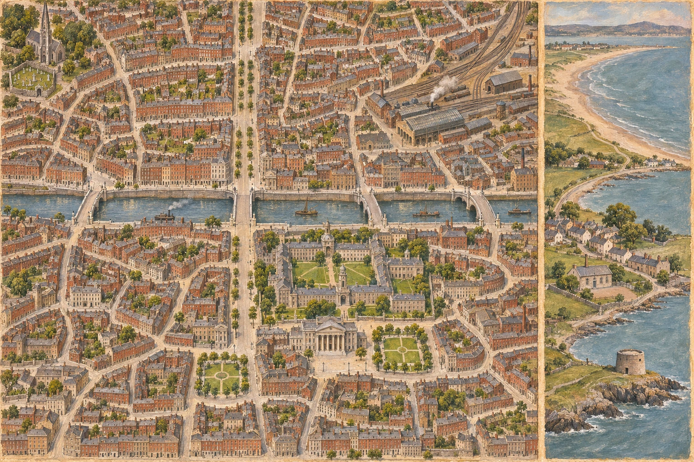

尤利西斯
ULYSSES · DUBLIN
进入第一章
1904年6月16日 · 随时选章
一座城，两段清晨，直到深夜。
在都柏林，走进小说。
点选街区里的章号，查看人物与剧情。
第一至四章可直接进入任一场景。
地点与章节
连续剧情
章节选段
缩小
100%
放大

DUBLIN
16 JUNE 1904
RIVER LIFFEY · 利菲河
海岸分图区
SANDYMOUNT / DALKEY / SANDYCOVE
埃克尔斯街 · 同一所房子
南岸 · SOUTH BANK
分图区与市中心不同比例
N
手绘城市示意 · 可放大后滚动查看 · 章号对应小说章序，地图位置经过艺术化调整